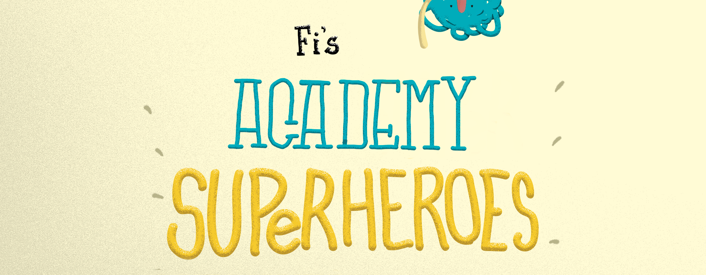
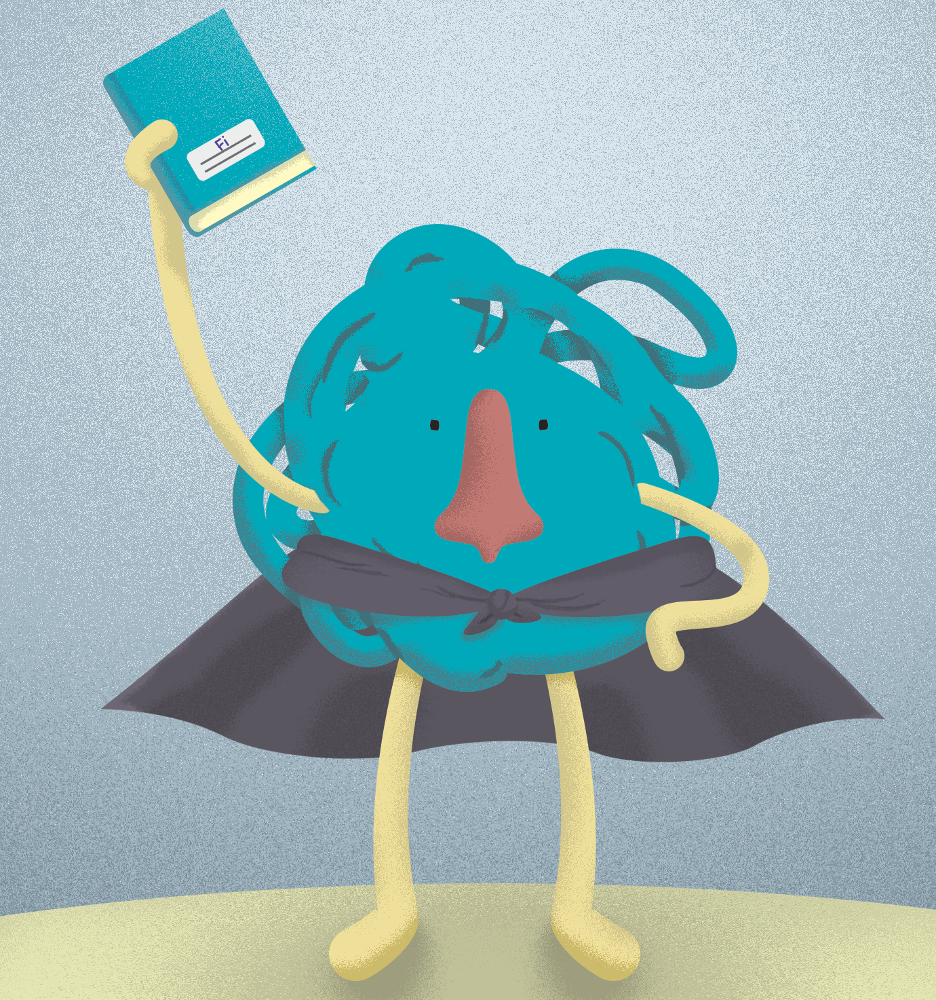

Fi's Academy for Superheroes
Fi's Academy for Superheroes is an interactive experience for kids with asthma, on which they will learn to take action or reduce the severity of an asthma attack.
Based on three stages – Learn, Jump and Glue – children that have been recently diagnosed with asthma can begin to understand what happens in their bodies and how to take care of themselves.
Our work was to designed the experience from the interactive experience location, the characters and stories to the illustrations, style and the notebook.
Location: Dessau-Roßlau, Germany
Team: Estefania Eid, Guilherme Martinez, Deniz Bagheri.
2016
